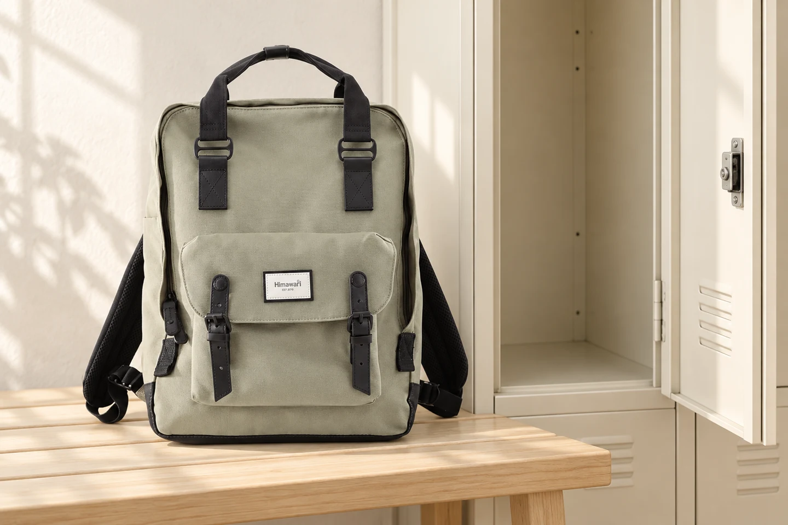

사물함에 백팩을 넣을 때: 문이 닫히는 공간까지 재어보세요

학교나 사무실에서 가방을 넣었는데 사물함 문이 닫히지 않는 날이 있습니다. 안쪽에는 들어가도 앞주머니나 손잡이가 문에 닿기 때문입니다. 사물함에 맞는지 볼 때는 빈 공간의 크기와 문이 움직이는 공간을 따로 생각해 보세요.
첫 번째 기준은 안쪽보다 입구
줄자를 댈 수 있는 사물함이라면 가로·세로·깊이에 더해 실제 입구의 폭을 확인합니다. 선반이나 문틀 때문에 안쪽보다 입구가 좁을 수 있습니다. 가방도 납작한 빈 상태가 아니라 평소 짐을 넣은 상태로 봅니다. 앞주머니, 옆 물병, 손잡이처럼 본체 밖으로 나온 부분까지 포함해야 비교가 됩니다.
문 안쪽에 남겨야 할 자리
문을 열어 경첩과 잠금장치가 어느 쪽으로 튀어나오는지 살펴보세요. 가방을 넣은 다음 문을 천천히 가까이 가져가 보되, 닿는 느낌이 들면 멈춥니다. 문으로 가방을 눌러 모양을 바꾸거나 잠금장치를 힘으로 돌리지는 않습니다. 부피가 큰 파우치 하나를 꺼냈을 때 해결되는지 보고, 그래도 닿는다면 다른 보관 공간을 이용합니다.
어깨끈은 가방 뒤로 모으기
가방 바닥 전체가 선반에 닿도록 놓고 어깨끈 끝을 자연스럽게 안쪽으로 모읍니다. 문틈으로 끈이 삐져나오거나 경첩 사이에 들어가지 않는지 보세요. 지퍼 손잡이나 장식을 고리에 걸어 억지로 매달지 않습니다. 가방을 꺼낼 때도 끈만 잡아 당기기보다 본체를 받쳐 밖으로 옮길 여유가 있는지 확인합니다.
잠그기 전, 다시 꺼낼 한 가지
업무 중 쓸 출입카드나 휴대전화까지 넣고 문을 잠그면 곧 다시 열어야 합니다. 가방에서 꺼낼 물건을 먼저 챙긴 뒤 지퍼와 사물함 문을 닫으세요. 내부가 젖어 있거나 오염되어 있으면 다른 자리를 찾습니다. 장기 보관법과 달리 여기서의 핵심은 매일 반복하는 넣기·닫기·꺼내기가 무리 없이 이어지는지입니다.
참고·안내
- Himawari No.1010 제품 정보
- 실제 Himawari No.1010 제품 사진을 참조한 AI 연출 이미지입니다. 사진 속 사물함은 수납 가능 크기를 보증하지 않습니다.
자주 묻는 질문
옆으로 눕혀 넣어도 되나요?
내용물이 쏟아지거나 눌리지 않는지 먼저 확인하세요. 물병과 용기는 별도로 꺼내고 가방 전체가 받쳐지는 경우에만 제품 구조에 맞춰 놓습니다.
상품의 외부 치수만 알면 판단할 수 있나요?
외부 치수는 출발점입니다. 실제 짐으로 늘어난 깊이, 돌출된 포켓, 사물함 입구와 문 안쪽 구조까지 확인해야 합니다.